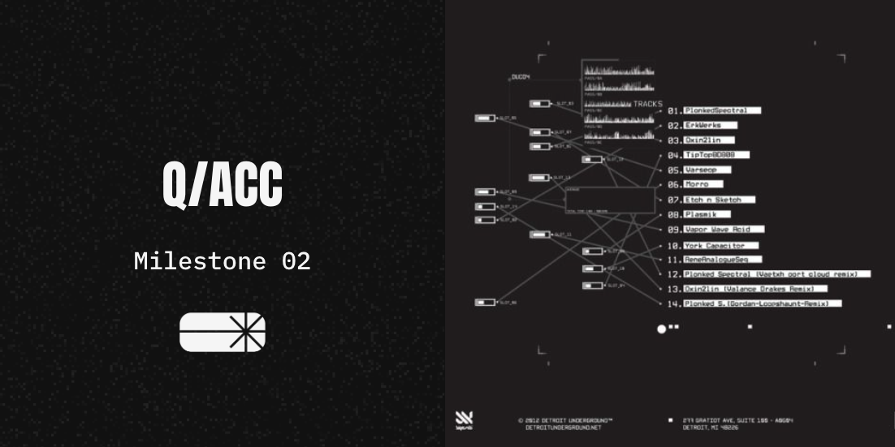
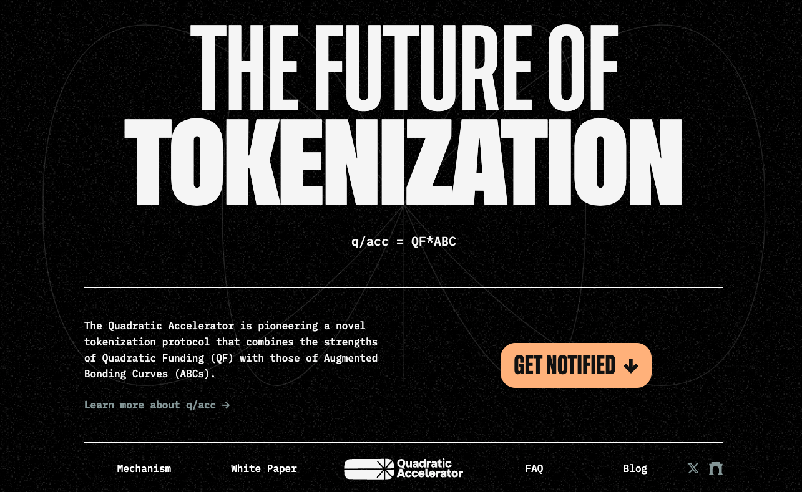
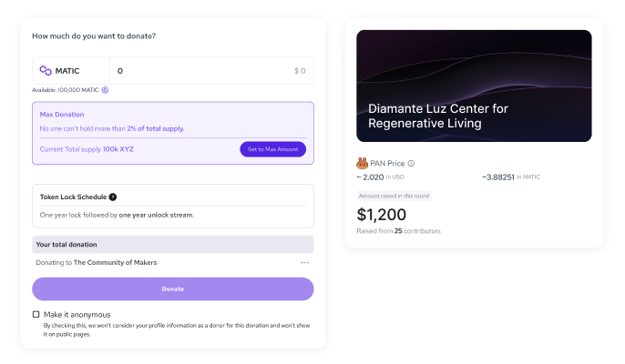

Q/ACC: MS2
Originally published at https://paragraph.com/@qacc/q-acc-ms2

It's been two months since our last update, and the team has been cooking. The q/acc protocol has met all planned milestone goals and announced its first call for season one applications. If this is your first time reading about q/acc, please read our previous milestone report below.
https://mirror.xyz/qacc.eth/0OFJFRReUBgn2x9nc5XUbEhe4ZmezoOqXG8WHDJoxYg
Over the last sixty days, the q/acc team, in collaboration with its partners, has completed a code audit and SDK development, deployed to zkEVM test net, refined its brand, and is deep into front-end development. Let's look at each of these in detail.
Code Audit Complete
As our previous reports describe, the Inverter Protocol plays a vital role in the q/acc infrastructure. After solidifying our specific bonding curve design and parameterization needs, we knew there would be no one better to work with than Inverter. They worked with us to further crystalize our specifications and have delivered the most future-proof and best-in-class bonding curve contracts. We could not ask for better collaboration on this journey.
After extensive testing and changes, Macro Security provided the final code audit of those contracts. Macro Security has audited code from notable protocols, such as Maker, Thirdweb, and Farcaster. You can read the full report here:
https://0xmacro.com/library/audits/inverter-1
The SDK
The essential levers and parameters of the Inverter and q/acc capabilities have been cleanly delineated behind a software development kit (SDK) to create the best possible developer experience. You can dive into the Inverter docs directly here or explore the q/acc distinctive in this convenient hackmd. Everything needed to deploy a new workflow and configure bonding curve interactions and vesting schedules is listed here. See some of the capabilities made conveniently available with the SDK:
Bonding Curve Interactions
-
enabling permissioned buying
-
disabling permissioned buying
-
changing buy fees on BC
-
granting buy permissions
-
getting "amount out" for a given BC purchase
Bonding Curve Token Vesting
-
buying from BC
-
setting up vesting
-
granting the right to set up vesting
-
claiming a vest
-
canceling a vest
zkEVM Testnet Deployment
Every chain presents opportunities for unforeseen hiccups and speedbumps. Out of an abundance of caution and to prevent surprises when the time comes for deployment, the newest audited code has been deployed to the Polygon zkEVM test net, Cardona. No deployment surprises or roadblocks were encountered. You can explore and navigate the various deployment contracts seen below:
-
Gen Orch Factory_v1: 0xC0c813D16edEd4534C2d9E62099904Ce44500C19
-
q/acc Factory: 0x640e20d6ff41A9334968F26d6d9037B7C45d297f
-
Example Orchestrator: 0x570a1D2DC3DE70bB7a6159EB19dD185aEad7dD06
-
Example issuance token: 0xe8645262672D81c846039AEEE50Bb36429482E53
Brand, Website, & Dapp
Brand
While q/acc is being incubated under Giveth, the plan has always been to distinguish it with its own unique brand identity. To this end, the team has landed on the following logo and general aesthetic after conducting an extensive brand exercise under the guidance of General Magic. We could not be happier with the results. A lot more assets were produced as a result of this exercise, but the below images should give you a taste of things to come.

Website
Naturally, the first thing we did without the new brand was put it to work. Check out our new website! It’s bold, audacious, and straight to the point. It's fairly barebones for now, but that will change. We’re working on a video explainer and an official technical paper to cover all the bases. Visit the website, read the Q&As, and sign up to get notified of updates. Do not miss the action: https://qacc.giveth.io/

https://qacc.giveth.io/
Dapp
The entire Giveth community has been a dream to work with. Their knowledge and experience running a quadratic funding platform are second to none. They have learned in the school of hard knocks what works and what doesn't work regarding project and donor UX. All this experience comes into play as we design the q/acc interface. Technical details indicating donation limits and project onboarding flows are deeply underway. You can see a sneak peek of the work below. This is just the tip of the iceberg.

Get Involved
This protocol will be a monumental turning point in the history of Web3 growth. Now is the time to level up your knowledge of the mechanisms technical mechanics and signal your support for the values it represents. You can do that in a few ways.
-
Go deeper with the knowledge hub. Learn about the program, mechanism parameters and phases, and everything considered in the construction of this project. By doing so, you ensure you stay ahead of the curve. See: https://bit.ly/qacc-knowledge-hub
-
Subscribe. Be sure to follow us on Farcaster, Twitter, and Mirror and turn on notifications. The next few months are going to fly by, and you don’t want to miss the opportunity to tokenize your favorite project or access the tokens of those who do.
-
Apply! We just announced our first call for project applicants with priority review for projects that apply before Friday, Aug 30th.
https://mirror.xyz/qacc.eth/2VpX3NdJc0AcoNNKxX0JZ1toCe4CavWY9F189aKSkaE
Originally published on Quadratic Accelerator